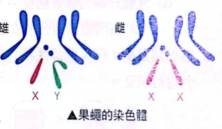
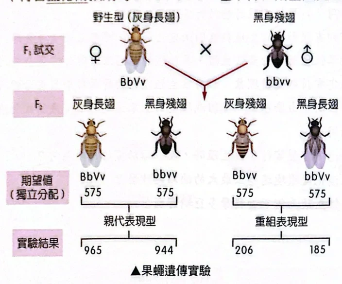
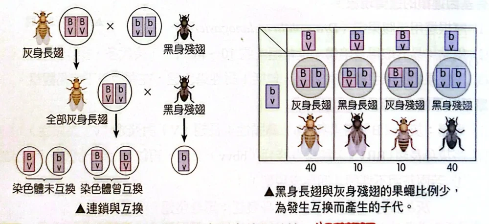
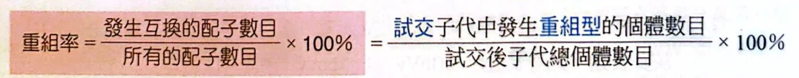
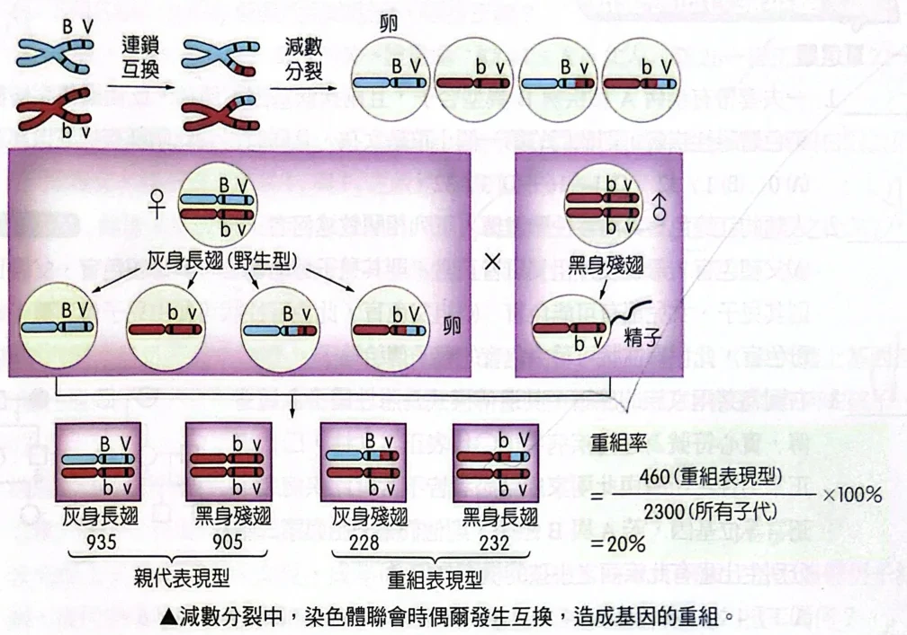
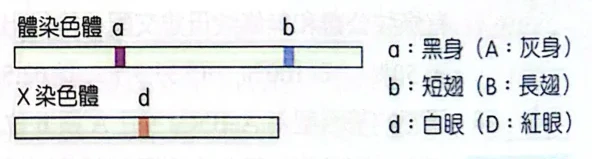
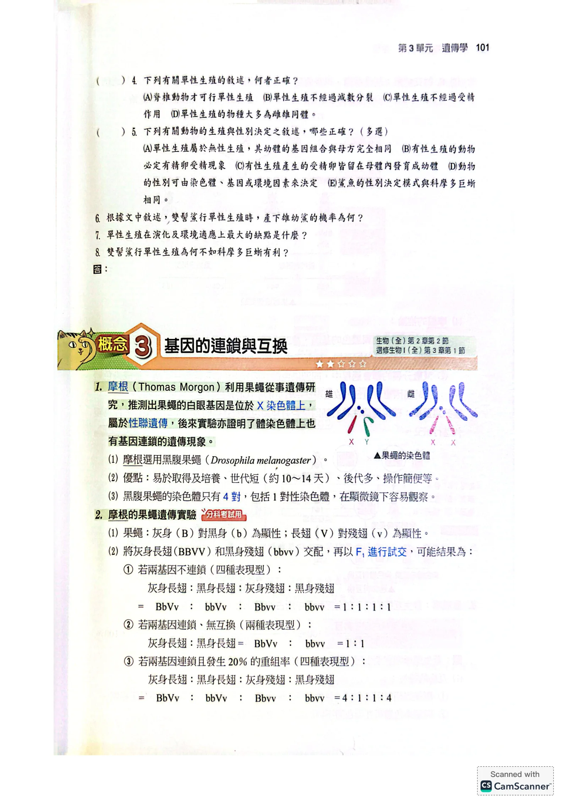
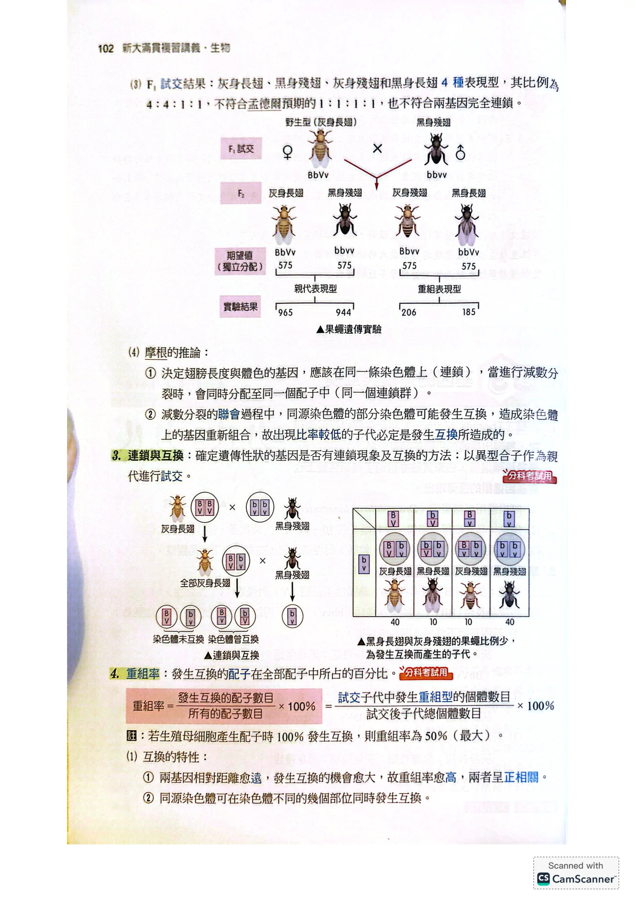
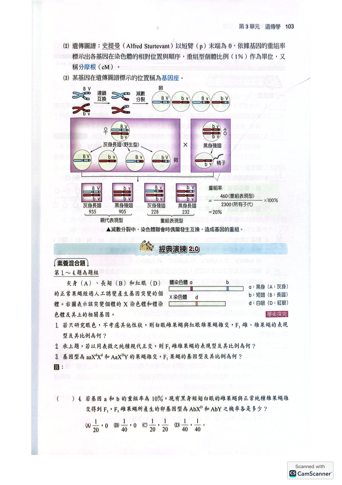

摩根與果蠅
- 摩根用果蠅推出白眼基因在X染色體上（性聯遺傳，見3-3）；後來又證明體染色體上的基因也會連鎖。
- 用的是黑腹果蠅：好取得、好養、世代短（約10～14天）、後代多、操作簡單。
- 染色體只有4對（含1對性染色體），顯微鏡下容易觀察。

果蠅只有4對染色體：3對體染色體＋1對性染色體（雄XY、雌XX）原講義PDF第99頁・印刷第101頁・點圖放大
果蠅試交的三種可能結果
- 灰身（B）對黑身（b）為顯性；長翅（V）對殘翅（v）為顯性。
- 灰身長翅（BBVV）× 黑身殘翅（bbvv）→ F₁ 全為 BbVv（灰身長翅）。
- 再拿 F₁ 和 bbvv 試交：試交對象只給 bv，所以子代表現型＝F₁ 配子種類。
摩根的實驗結果與推論

摩根的試交：灰身長翅 F₁（BbVv）× 黑身殘翅（bbvv）；親代型965、944，重組型206、185，遠離 1:1:1:1原講義PDF第100頁・印刷第102頁・點圖放大
- 結果：灰長 965、黑殘 944（親代型，多）；灰殘 206、黑長 185（重組型，少）。
- 不是 1:1:1:1（不像獨立分配），也不是只有兩種（不像完全連鎖）。
- 推論①：體色和翅長基因在同一條染色體上，通常一起進入同一配子（同一連鎖群）。
- 推論②：減數分裂聯會時，同源染色體可能互換一段，產生新組合；比例較低的子代就是互換造成的。
連鎖與互換：用試交判斷
- 判斷兩基因有沒有連鎖、有沒有互換：拿異型合子當親代做試交。
- 沒互換的染色體 → 親代型配子；有互換的染色體 → 重組型配子。

左：連鎖的兩基因若沒互換只產生兩種配子；右：互換後多出少數重組配子，子代約 40:10:10:40原講義PDF第100頁・印刷第102頁・點圖放大
重組率

重組率＝重組配子數 ÷ 全部配子數 ×100%＝試交子代中重組型個體數 ÷ 子代總數 ×100%原講義PDF第100頁・印刷第102頁・點圖放大
- 重組率：發生互換（重組）的配子占全部配子的百分比。
- 試交時重組型配子 → 直接變成重組型子代，所以可用子代個體數來算。
- 重組率最大 50%：就算每個生殖母細胞都互換，四個配子中也只有兩個是重組型。
遺傳圖譜與分摩根
- 史提曼以短臂（p）末端為 0，用重組率標出各基因在染色體上的相對位置與順序，就是遺傳圖譜。
- 單位：重組率 1% ＝ 1 分摩根（cM）。
- 某基因在遺傳圖譜上的位置稱為基因座。

聯會時同源染色體互換 → 產生 BV、bv（親代型）與 Bv、bV（重組型）四種卵；460 ÷ 2300 = 20%原講義PDF第101頁・印刷第103頁・點圖放大
素養混合題：突變果蠅

素養混合題：突變果蠅的體染色體上有 a、b（連鎖），X 染色體上有 d原講義PDF第101頁・印刷第103頁・點圖放大
- a（黑身）、b（短翅）在同一條體染色體上 → 連鎖，要用重組率。
- d（白眼）在X染色體上 → 性聯，寫基因型時要寫成 XD、Xd、Y。
- 眼色跟 a、b 在不同染色體上 → 和它們獨立，可以分開算再相乘。
若只研究眼色，不考慮其他性狀，則白眼雌果蠅與紅眼雄果蠅雜交，F₁ 雌、雄果蠅的表現型及其比例為何？
看答案與詳解收起
答F₁ 雌果蠅全為紅眼；雄果蠅全為白眼（雌紅眼：雄白眼＝1：1）。
解- 先寫親代：白眼雌 XdXd；紅眼雄 XDY。
- 雌配子只有 Xd；雄配子 XD、Y 各一半。
- 女兒＝Xd（媽）＋XD（爸）＝XDXd → 紅眼。
- 兒子＝Xd（媽）＋Y（爸）＝XdY → 白眼。
小結性聯題先寫 X、Y：爸爸的 X 只給女兒，兒子的 X 只來自媽媽。
承上題，若以同表徵之純種親代互交（即紅眼純種雌 × 白眼雄），則 F₁ 雌雄果蠅的表現型及其比例為何？
看答案與詳解收起
答F₁ 雌、雄果蠅全為紅眼。
解- 互交＝把雌雄的性狀對調：紅眼純種雌 XDXD × 白眼雄 XdY。
- 女兒 XDXd → 紅眼；兒子 XDY → 紅眼。
- 和第1題結果不同 → 這正是判斷「性聯遺傳」的方法：正交、反交結果不同。體染色體遺傳正反交結果相同。
基因型為 aaXdXd 和 AaXDY 的果蠅雜交，F₁ 果蠅的基因型及其比例為何？
看答案與詳解收起
答AaXDXd：aaXDXd：AaXdY：aaXdY＝1：1：1：1。
解- A 在體染色體、D 在 X 染色體 → 兩者獨立，分開算。
- aa × Aa → Aa：aa＝1：1。
- XdXd × XDY → XDXd（雌）：XdY（雄）＝1：1。
- 相乘：四種各 1/2×1/2＝1/4。
| XDXd（1/2） | XdY（1/2） |
|---|
| Aa（1/2） | AaXDXd 1/4 | AaXdY 1/4 |
|---|
| aa（1/2） | aaXDXd 1/4 | aaXdY 1/4 |
|---|
若基因 a 和 b 的重組率為 10%，現有黑身短翅白眼的雌果蠅與正常純種雄果蠅雜交得到 F₁，F₁ 雌果蠅所產生的卵基因型為 AbXD 和 AbY 之機率各是多少？
(A) 1/20，0 (B) 1/40，0 (C) 1/20，1/20 (D) 1/40，1/40
看答案與詳解收起
答B。
解- 親代：雌 aabbXdXd（給 ab、Xd）；雄 AABBXDY（給 AB，XD 或 Y）。
- F₁ 雌＝XDXd，體染色體一條是 AB、一條是 ab（相引）。
- a、b 重組率 10% → 重組型配子 Ab、aB 各 5%；親代型 AB、ab 各 45%。
- Ab 的機率 5%＝1/20；卵拿到 XD 的機率 1/2 → AbXD＝1/20×1/2＝1/40。
- 卵細胞來自雌果蠅（XX），不可能帶 Y → AbY＝0。
小結重組率要「除以2」才是單一種重組配子的機率；雌配子絕不帶 Y。
本單元整理
下一篇是單元 3 練習題：把 3-1～3-4 的機率、血型、性聯、連鎖放在一起練。
核對原講義全頁（生物1 PDF99–101）
本節對應印刷101下半–103頁（概念3 基因的連鎖與互換＋經典演練2.0素養混合題1–4）。PDF99上半是上一單元3-3的經典演練4–8。

PDF第99頁／印刷第101頁
PDF第100頁／印刷第102頁
PDF第101頁／印刷第103頁